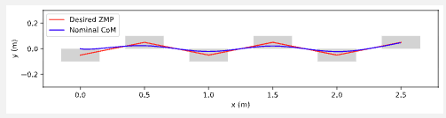

Walking and Running
Walking models
Limit Cycles
Rather than fixed point stabilization in linear systems control. Walking primarily deals with the limit cycle stability. One of the most famous limit cycle is the Van der Pol oscillator. Limit Cycle stability is determined by using Poincare maps, which turns the limit cycle stability problem into a fix point stability problem.
Contact Models for walking
- Models the ground as a stiff spring, when foot makes contact.
- this can cause large gradients and make the simulation blow up.
- Rigit contact - the foot never penetrates the ground.
- Impulse force that instantaneously stops the foot.
Rimless wheel Model
Gravity adds energy while collision makes system lose energy.
Kneed Walker Model
Compass Gait Model
Running models
Spring Loaded Inverted Pendulum (SLIP) Model

Parameters
- 2D coordinate system \((x,z)\) \(x\) points to the right, \(z\) points up.
- \(l_0\) = length of the spring to center of ball
- \(\theta\) = angle with up, clockwise.
SLIP Modeling and Control
Modeling the flight phase
The full state is modeled as \(\mathbf{x} = [x, z, \dot{x}, \dot{z}]^T\).
The dynamics is \(\dot{\mathbf{x}} = [\dot{x}, \dot{z}, 0, -g]^T\)
The control input is \(u = \theta\), since we assume that the leg can be controlled to any position instantaneously.
Modeling the stance phase
The full state of the stance phase is modeled in polar coordinates as \(\mathbf{x}= [r, \theta, \dot{r}, \dot{\theta}]^T\), where - \(r\) is leg length (distance from foot to CoM) - \(\theta\) : leg angle from vertical. - \(\dot{r}\): radial velocity
The location of the mass is given by \(\mathbf{x}_m = [-rsin(\theta), r cos(\theta)]^T\).
The Lagrangian is then \(L=T-U\) where \(T = \frac{m}{2} (\dot{r}^2 + r^2 \dot{\theta}^2)\) and \(U = mrgcos(\theta) + \frac{k}{2}(l_0 - r)^2\)
The dynamics are given as:
\[m \ddot{r} - mr\dot{\theta}^2 + mgcos(\theta) - k (l_0-r) = 0,\] \[mr^2\ddot{\theta} + 2mr\dot{r}\dot{\theta} - mgrsin(\theta) =0\]We assume this flight phase is purely ballistic, ie no control input.
Phase Transition
- flight to stance: The flight phase ends when the foot touches the ground again (touchdown), typically defined by \(z-l_0cos(\theta)\leq 0\)
- stance to flight phase: The transition from stance to flight happens when the stance leg reaches its rest length: \(r \geq l_0\)
Poincare Map of SLIP (Apex to Apex Map)

This is the Poincare map of the SLIP model for a specific constant energy \(\tilde{E}\).
The iterative approach shows that the right stable point is unstable and the left one is stable.
However, since the fundamental assumption is that energy is conserved, this analysis on this 1D Poincare map can only make a statement about partial stability, and the analysis does not pertain to stability against disturbances that change the the total energy of the system.
Fundamental Simplifications
- Through choosing Poincare section to be at the apex of the hop, \(\dot{z}=0\) by definition. We can therefore remove the state \(\dot{z}\).
- We will also ignore the absolute horizontal position \(x\), and the leg angle, \(\theta\), as they are irrelevant to the flight dynamics. This will leave us with two state variables: \(\dot{x}\), the horizontal velocity, and the hopping height \(z\).
- At the Apex, the two variables \(\dot{x}\), \(z\) are linked.
- This is because no energy is added or dissipated from the system.
- If you know the (cosntant) total energy in the system, and you know the height at the apex, then horizontal velocity can be determined (up to a sign): \(E_apex(z,\dot{x}) = \frac{1}{2} m \dot{x}^2 + mgz = E_0\)
Humanoid Control
Once you get enough Degrees of Freedom, we can factor the optimal control problem into pieces.
- First pass: control the center of mass (centroid) and angular momentum through contact forces.
- Move all of our joints to accomplish
- CoM + contact trajectories
Zero Moment Point Planning
Quest: constraints on contact forces \(\Rightarrow\) center of mass dynamics. Note this planning method causes robot to have a constant-height center of mass. For flat terrain, \(\text{ZMP}= \text{Center of Pressure}\)
Zero Moment point is defined as the point on the ground surface about which the horizontal component of the moment of ground reaction force is zero.
Recall that horizontal moment means the moments around x and y axes. The moment vector is parallel to x and y axes but perpendicular to the plane of force and arm vectors.
Very Important Special cases: Flat Terrain
- Support polygon is a horizontal region over which the center of mass must lie to achieve static stability. For example, for an object resting on a horizontal surface (e.g. a table), the support polygon is the convex hull of its “footprint” on the table.
- The humanoid can’t fall down unless the CoP is at the boundary of the support polygon.
- Simple trajectories of CoP lead to robust, dynamic walking.
- Given desired CoP, solving for CoM is a (finite) LQR problem
Center of Mass planning with Convex Optimization

The light pink line denotes the trajectory of the desired ZMP and CoP.
Zero Moment Planning: Assuming the knowlwedge of foot placements. The center of pressure shifts from one foot to the other. CoP can be solved as an LQR problem.
\[\min_{u} \int_{0}^{T} \|P_{CoP} - P^d_{CoP}\|_{Q}^2 dt + u^T R u\]Note that this is exactly the finite LQR formulation.
Generalization
- Angular momentum terms (about the center of mass): Centroidal moment matrix
- Contact Wrench Cone